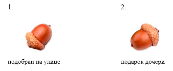

полный текст книги:
Ничто и Точка (предисловие)
Цель
Созерцаемое
Сущность
Сознание
Двухаспектная Сущность
Четвертое измерение и ...
Общество и Человечество
Пятое измерение и ...
Первовозникновение
Акт "Я"
Процесс изучения Акта "Я"
Смысл Бытия
Развитие Сущности
Коллективная реальность
Система развития Сущности
Эхо (отражение)
Реальный аспект Глоб. "Я"
О мировоззрении
Пространство-время
Осношение к Себе
Отношение к своему телу
Лень
Страх
Надежда (Ожидание Чуда)
Адаптация
Тождество личности
Отношение [Рассудок|Тело]
Свобода Воли
Трудная проблема Сознания
Неразличимость и идентичн.
Материя
Гносеология
Эпистемология
Разделение
на главную страницу сайта
— глава тридцать четвертая —
————————————————————————————
————————————————————————————
ЭПИСТЕМОЛОГИЯ
Предмет Гносеологии в отношении [ Субъект | Объект ], можно считать раскрытым – на сколько было необходимо чтобы определить Его (Предмета) задачи на долгое время. Но, касаемо Наших Целей, поставленных в самом начале, продолжим исследование для Раскрытия широты, этой – буквально: Всеобъемлющей Бездонной Темы <без конца>;
Разберемся в отношении [ Объект | Познание ], вернее – нам следует провести ‘четкую границу’ между понятиями: ‘Гносеология’ и ‘Эпистемология’, потому что в них очень большое различие, но многие продолжают их путать, или часто заменяют одно другим, и «это, не совсем удобно», потому что, одно дело механизм восприятия (реализации) объекта, а другое – осознание Сути, смысла и назначения;
Эпистемология включает не только обозначенное (здесь) направление, хотя всё очень тесно взаимосвязано. Сначала разберемся с тем, Как мы Интерпретируем любой объект, вернее, как Рассудок воспринимает объекты и ситуации в качестве ‘сырья’ - предназначенного для ‘его’ дальнейшей обработки, идентификации, квалификации, последующего анализа, с учетом отношений, и уже определенной роли в конкретной ситуации. Прежде всего, будем рассуждать не о механизме извлечения опыта (и, совсем не об этом), но о наличии роли объекта в любой ситуации, то есть о том как нами воспринимается объект значимым – участвующим;
На самом деле, объект участвующий в Ситуации влияет на Неё, как влиял бы Живой Участник (и иногда даже более). С уже известной позиции, мы утверждаем, что условиями управляет ‘Система Развития Сущности’, как Надстройка в Сознании, регулирующая степень сложности Ситуаций.
Это необходимо для соответствия контента способностям участников, иначе мы не сможем понимать происходящее («Мир для Живых»). «Сознание» при этом, является лишь Искусным Исполнителем, грубо говоря – «Исполнителем Воли Сущности», и как мы уже выясняли, это не лишает нас Собственной Воли, так как Сценарий отсутствует, или точнее Система заботится о неповторимости ситуаций, надежно обеспечивая постоянный приток Нового опыта;
Cценарий: “Обеспечение отсутствия любого сценария”, и можно понадеяться на Свой сценарий, но – всегда будет хоть чуточку, но обязательно иначе, не совсем по Плану;
Создающееся у нас впечатление, что объект не случайно расположен, именно там, где и должен находиться, но мы вольны думать (и часто сетуем), что за объектом стоит «Злая Сила», и он находится в неугодном нам месте – мы ошибаемся, объекты находятся в самом выгодном для нас месте, и расположены максимально рационально, по этой причине и обеспечивают эффективное извлечение опыта;
Следовательно, наше мнение о живой сущности объектов, не лишено здравого смысла, но и буквально соответствует действительности: Мы активно развиваемся | участвуем в «Развитии Сущности», что в общем и есть – одно и то же;
Поскольку в программировании, «Интерпретация» – это обработка и выполнение команды, в коде программы или запроса, то здесь ‘Инициатором Кода’ мы подразумеваем Сознание, а получателем, т.е. и обработчиком – Рассудок, однако, это необходимо рассматривать в обе стороны, и от Рассудка в адрес Сознания. Вполне логично полагать, что Сознание использует и предлагает доступный интерфейс и Единый для всех существ Формат данных (API?). Почему обязательно Единый? – потому что «Сущность» озабочена Развитием, и ничто не способствует Этому настолько, как Единая универсальная Система. Но, это не общая система коммуникации (для нас ‘пока нет’ и не следует это путать), хотя некоторые принципы мы используем прямо сейчас, и эта Сеть будет развиваться вместе с нашей Цивилизацией;
«Интерпретация» – декодирование волны и приведение данных, в соответствующий уровню рассудка, формат;
Можно считать интерпретацию, фундаментальной частью обработчика, и психически активной функцией Рассудка. Это можно почувствовать повернув голову и посмотрев на предмет, который прежде был на периферии, в стороне от ‘точки сосредоточения’. Повернитесь и посмотрите на скрытые от вашего взора, бывшие за вашей спиной, вещи. Постарайтесь почувствовать феномен Интерпретации как факт явления (и ментального касания), затем обернитесь посмотрев на любое фото, заострите внимание и ощутите движение чувств, и снова повернитесь к другому объекту, к листку с текстом, либо книге (которую недавно читали). Ощутите легкое, еле уловимое, ощущение при наведении взгляда. Вы чувствуете это ощущение? – так происходит ‘конкретизация вещи в аспекте смысловой четкости’. Если Вы чувствуете важные мелочи, то быстро осознаете значения понятий: «Идентификация» и «Квалификация», это неотъемлемые, и важнейшие для интеллектуального существа, функции Рассудка – все они индивидуальны и субъективны, поэтому столь сложно понять друг друга :);
«Идентификация» – распознавание, определение ‘вещи’, причем не обязательно ‘объекты в явной реальности’, это могут быть и мыслеформы, но даже их приходится узнать, <вспоминать> как будто забытые. Этот процесс связан с соответствующими отношениями. Идентификация – Есть Суть сопоставления форм. Не только основные фигуры: круг (шар), квадрат (куб), и т.д., но это и сложные формы, которые уже известны (разные лица, виды деревьев, …);
«Квалификация» – это психический ценз в отношении к объекту (в том числе к живому человеку, и даже особенно к человеку). Странно, но часто суждение ассоциативно, и именно: человеку свойственно увидеть незнакомое лицо и сделать ‘заключение о свойствах’, типа плохой / хороший. Квалификация – Есть Суть сопоставления чувств, и всех, доступных Рассудку <‘психически сложных’> критериев. Простые примеры: знакомое / и не знакомое, страшное / и не страшное, опасное / и безопасное, холодное / и горячее; также относящиеся к более сложным аспектам, например, этический: злое / и доброе, честно / и не честно, праведно / и не праведно, и т.д., надеемся здесь всё просто и понятно;
Тем самым, Эпистемология включает последовательность итераций Рассудка, в результате которой извлекается опыт – как исчерпывающее, и имеющееся в наличии, знание об одном конкретном объекте. Процесс приобретения знаний об объекте не ограничивается (одним уроком и) моментом реальности, но участвуя в анализе ситуаций, имеющийся опыт используется уже в полном объеме, и кроме этого он постоянно дополняется – формируя ‘Актуальное Знание’;
Все объекты, созерцаются и воспринимаются психически активно, по Этой Причине они, и становятся Психически активными, и имеют психическую ёмкость (содержание).
Два дубовых желудя с виду почти одинаковы (похожи), но имеют разную психически активную, смысловую емкость:

читать следующую главу >> << назад